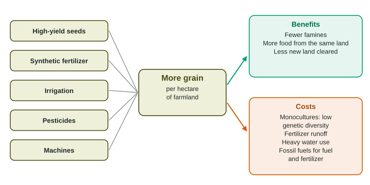

The Green Revolution
The Green Revolution greatly increased grain yields from the 1940s to the 1970s with high-yield varieties, synthetic fertilizer, irrigation, pesticides and machines.
Part 1 · Hook
Why this matters
Part 2 · Before you start
What this builds on
Part 3 · Prerequisite check
Quick check before you start
1. What is a limiting nutrient?
- The nutrient in shortest supply, which holds back growth
- The nutrient a plant needs in the largest amount by mass
- A nutrient that is poisonous to plants above a certain level
- The nutrient that plants release when they decompose
Show the answer
Growth is held back by whatever is scarcest; adding it lets growth increase.
- Correct: The nutrient in shortest supply, which holds back growth:
- The nutrient a plant needs in the largest amount by mass:
- A nutrient that is poisonous to plants above a certain level:
- The nutrient that plants release when they decompose:
2. Why does a population with low genetic diversity face more risk?
- A single disease or change can harm most individuals at once
- It reproduces more slowly than a population with high diversity
- It always has a smaller carrying capacity than other populations
- It cannot carry out photosynthesis as well as a diverse one
Show the answer
When individuals are alike, a threat that harms one tends to harm them all.
- Correct: A single disease or change can harm most individuals at once:
- It reproduces more slowly than a population with high diversity:
- It always has a smaller carrying capacity than other populations:
- It cannot carry out photosynthesis as well as a diverse one:
Part 4 · See it
See it first

Part 5 · Step by step
How it works, step by step
- Short-stemmed, high-yield wheat and rice are bredplants can carry heavy heads of grain without falling over
- Those plants get synthetic fertilizer and watergrain yield per hectare roughly doubles
- Farmers plant the same high-yield variety over wide areasthe crop is a monoculture with low genetic diversity
- Fertilizer the crop does not take up runs off fieldsnitrate and phosphate pollute rivers and lakes
Part 6 · Key ideas
Key ideas
- The Green Revolution (about the 1940s to 1970s) raised grain yields with high-yield varieties, synthetic fertilizer, irrigation, pesticides and machines.
- Benefits: more food per hectare, fewer famines, cheaper food, and less forest and grassland cleared for farms than would otherwise be needed.
- Costs: monocultures with low genetic diversity, fertilizer runoff, heavy water use, soil damage, and fossil fuels burned by machines and used to make fertilizer.
- A genetically modified organism has DNA changed in a lab. GM crops can raise yields or reduce spraying, but they can lower crop diversity and pests can evolve to overcome them.
Part 7 · Misconception
A common mistake
The wrong idea: The Green Revolution was about organic farming and local seeds.
What actually happens: It was the opposite: new high-yield varieties that need synthetic fertilizer, irrigation, pesticides and machines to produce their large harvests.
Part 8 · Check yourself
Check yourself
Exam-style questions. Anything you miss goes into your review queue.
1. Which set of changes best describes the Green Revolution?
- High-yield grain varieties grown with synthetic fertilizer, irrigation, pesticides and machines
- A return to small family farms that grow many local crop varieties without buying any farm inputs
- A shift from growing grain to raising cattle on pasture across large parts of Asia
- The clearing of tropical forests to open large new areas of farmland for grain
Show the answer
The Green Revolution raised yields on existing farmland with new varieties and purchased inputs.
- Correct: High-yield grain varieties grown with synthetic fertilizer, irrigation, pesticides and machines: Right: new seeds plus fertilizer, water, pesticides and machines.
- A return to small family farms that grow many local crop varieties without buying any farm inputs: That describes traditional farming, which the Green Revolution largely replaced.
- A shift from growing grain to raising cattle on pasture across large parts of Asia: The Green Revolution was about grain yields, not a shift to cattle.
- The clearing of tropical forests to open large new areas of farmland for grain: It raised yield on existing land; it did not depend on clearing forest.
2. Short-stemmed (dwarf) wheat was central to the Green Revolution. Why did a short stem matter?
- A short, stiff stem can hold up a heavy head of grain fed by fertilizer without falling over
- A short stem lets the plant grow with almost no water, so the farmers no longer need irrigation
- A short stem makes the plant immune to insect pests and plant diseases
- A short stem lets the plant fix its own nitrogen, so no fertilizer is needed
Show the answer
Tall wheat given lots of fertilizer grows heavy heads and falls over (lodges). Dwarf varieties stay upright, so fertilizer becomes grain.
- Correct: A short, stiff stem can hold up a heavy head of grain fed by fertilizer without falling over: Right: dwarf plants turn extra fertilizer into grain instead of falling over.
- A short stem lets the plant grow with almost no water, so the farmers no longer need irrigation: High-yield varieties need more water, not less.
- A short stem makes the plant immune to insect pests and plant diseases: No variety is immune to every pest; monocultures of one variety can be vulnerable.
- A short stem lets the plant fix its own nitrogen, so no fertilizer is needed: Wheat cannot fix nitrogen; that is legumes with their bacteria.
Data
Wheat yield and fertilizer use in one country
| Year | Wheat yield (metric tons per ha) | Nitrogen fertilizer (kg per ha) |
|---|---|---|
| 1960 | 0.8 | 5 |
| 1970 | 1.3 | 30 |
| 1980 | 1.6 | 60 |
| 1990 | 2.3 | 100 |
| 2000 | 2.7 | 140 |
3. Which statement describes the data in the table from 1960 to 2000?
- Wheat yield and nitrogen fertilizer use both rose in every decade
- Wheat yield rose while nitrogen fertilizer use fell in each decade
- Nitrogen fertilizer use rose while wheat yield stayed close to 0.8
- Wheat yield rose quickly at first, then fell after 1980 as use grew
Show the answer
Yield went 0.8, 1.3, 1.6, 2.3, 2.7 and fertilizer went 5, 30, 60, 100, 140: both rose each decade.
- Correct: Wheat yield and nitrogen fertilizer use both rose in every decade: Right: both columns increase at every step.
- Wheat yield rose while nitrogen fertilizer use fell in each decade: Fertilizer use rose, from 5 to 140 kg per ha.
- Nitrogen fertilizer use rose while wheat yield stayed close to 0.8: Yield rose from 0.8 to 2.7 metric tons per ha.
- Wheat yield rose quickly at first, then fell after 1980 as use grew: Yield kept rising after 1980, to 2.3 and then 2.7.
4. Write the setup for the percent change in wheat yield from 1960 to 2000, then give the answer.
Type the setup as on the exam, with brackets and units, then the answer.
Show the answer
- Setup: ; answer 237.5 %
5. From 1990 to 2000, fertilizer use rose by 40 kg per ha and yield rose by 0.4 metric tons per ha. From 1960 to 1970, fertilizer rose by 25 kg per ha and yield by 0.5. What does this suggest?
- Each added kilogram of fertilizer raised yield less in the 1990s than in the 1960s
- Each added kilogram of fertilizer raised yield more in the 1990s than in the 1960s
- Fertilizer had no link to yield in either decade, so it could have been stopped
- Yield fell in the 1990s, so the extra fertilizer was harming the wheat plants
Show the answer
1960s: metric tons per kg; 1990s: metric tons per kg. Returns from extra fertilizer were falling.
- Correct: Each added kilogram of fertilizer raised yield less in the 1990s than in the 1960s: Right: the gain per added kilogram halved, from 0.02 to 0.01.
- Each added kilogram of fertilizer raised yield more in the 1990s than in the 1960s: The gain per added kilogram fell, not rose.
- Fertilizer had no link to yield in either decade, so it could have been stopped: Yield did rise with fertilizer in both decades.
- Yield fell in the 1990s, so the extra fertilizer was harming the wheat plants: Yield rose in the 1990s, from 2.3 to 2.7.
6. If fertilizer use keeps rising while each added kilogram adds less grain, what environmental problem is most likely to grow?
- More nitrogen is left unused in fields, so more washes into rivers and groundwater
- Less nitrogen reaches rivers, because the crop takes up more of the nitrogen it is given
- The soil runs out of nitrogen, so the farms stop using fertilizer
- The wheat fixes more nitrogen from the air, so the soil becomes too rich
Show the answer
If extra fertilizer adds little grain, the crop is not using it, so more is left to run off or leach.
- Correct: More nitrogen is left unused in fields, so more washes into rivers and groundwater: Right: unused nitrogen ends up in water.
- Less nitrogen reaches rivers, because the crop takes up more of the nitrogen it is given: Falling returns mean the crop is using less of what is added, not all of it.
- The soil runs out of nitrogen, so the farms stop using fertilizer: Adding more fertilizer each year does not run the soil out of nitrogen.
- The wheat fixes more nitrogen from the air, so the soil becomes too rich: Wheat does not fix nitrogen.
7. A farmer applies 120 kg of nitrogen fertilizer per hectare to 35 hectares, and about 30% of it is not taken up by the crop. Write the setup for the mass of nitrogen not taken up, then give the answer with its unit.
Type the setup as on the exam, with brackets and units, then the answer.
Show the answer
Total applied:
- Setup: ; answer 1260 kg
Part 9 · Summary
Summary
Part 10 · Up next
What comes next
Part 11 · Connections